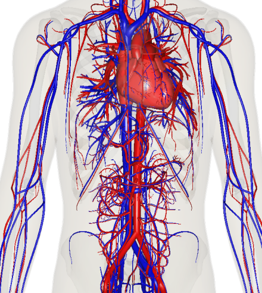

Someone who has Multiple Sclerosis has their body’s immune system attacking the myelin sheath; the protective cell layer around the nervous system. As these cells are damaged, nerves are exposed, and the brain has issues of sending signals to the body. This disconnection between the brain and organs causes many problems like vertigo, dizziness, and memory problem.
People who are affected by Multiple Sclerosis have a higher risk of developing osteoporosis, a disease that reduces bone mass and deteriorates tissue. This is due to the treatment and reduced activity completed by the patient. The weakened bones in the body make individuals susceptible to breaks and factures. Weak bones make coordination and balance problems risky and make the lifestyle of a MS patient very difficult.
MS, being an immune-attacking disease, affects the immune system heavily. The body’s immune system destroys healthy nerve tissue, affecting nerve damage throughout the body. Activity from the immune system is responsible for much of the symptoms of Multiple Sclerosis. Often times, symptoms increase during a period of immune system activity and deceases when the period ends.
As the central nervous system is attacked by the immune system, the attacking immune system often causes the circulatory system to suffer problems. Weak chest muscles lead to low oxygen production and shallow breathing. Studies have shown that women with Multiple Sclerosis have a notable increase in cardiovascular problems including heart failure, heart attack, and stroke.
Thankfully, Multiple Sclerosis does not directly impact reproduction. Sexual function is the problem. Many people, who are diagnosed with MS, suffer from experiencing arousal or orgasmic effects. This is caused by nerve damage and also can be caused by self-esteem or depression issues. Pain and fatigue, due to the treatments, may make sexual intimacy problematic. However, these problems can be solved with medication, sexual stimulants, or planning.